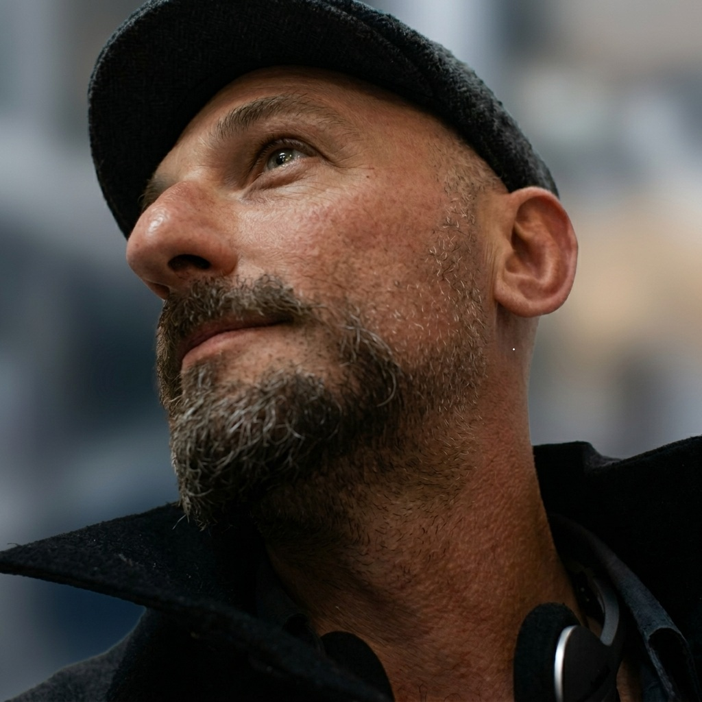

Specialista Senior in IT Systems & Mainframe Operations con oltre 15 anni di esperienza nella gestione operativa H24/7, monitoraggio e presidio di infrastrutture enterprise mission-critical (Mainframe z/OS e Sistemi Distribuiti) e 10 anni di esperienza pregressa nello sviluppo software e analisi funzionale in ambito mainframe bancario. Comprovata affidabilità nella gestione di sistemi bancari ad alta criticità, incident management e coordinamento di escalation. Forte orientamento alla diagnostica delle anomalie batch, risoluzione di contese e stalli di risorsa database e coordinamento di progetti di transizione e outsourcing di control room. Il background da analista programmatore fornisce una comprensione approfondita delle logiche applicative, che arricchisce la capacità diagnostica in ambito operativo.
Mainframe z/OS: TSO/ISPF, JES2/JES3, SDSF, monitoraggio console MVS, utility z/OS (IDCAMS repro, rename, space adjustment).
Schedulazione: TWS (Tivoli/IWS), Control-M, CA7.
Database & Middleware: Diagnostica contese, lock e deadlock DB2, monitoraggio transazioni CICS, code MQSeries.
Sistemi Distribuiti & ITSM: VMware vSphere, Helix, ServiceNow, BMC Remedy.
Sviluppo Mainframe: Cobol, CICS (programmazione), SQL-DB2 (sviluppo), Pacbase.
Versionamento & Debug: Endevor, ChangeMan, Xpediter.
Linguaggi Storici: C, C++, C#, Assembler, Java, VBScript (competenze logiche pregresse, non correnti).
Attività di studio e progettazione architetturale indipendente (sviluppo prototipale assistito da agenti AI).